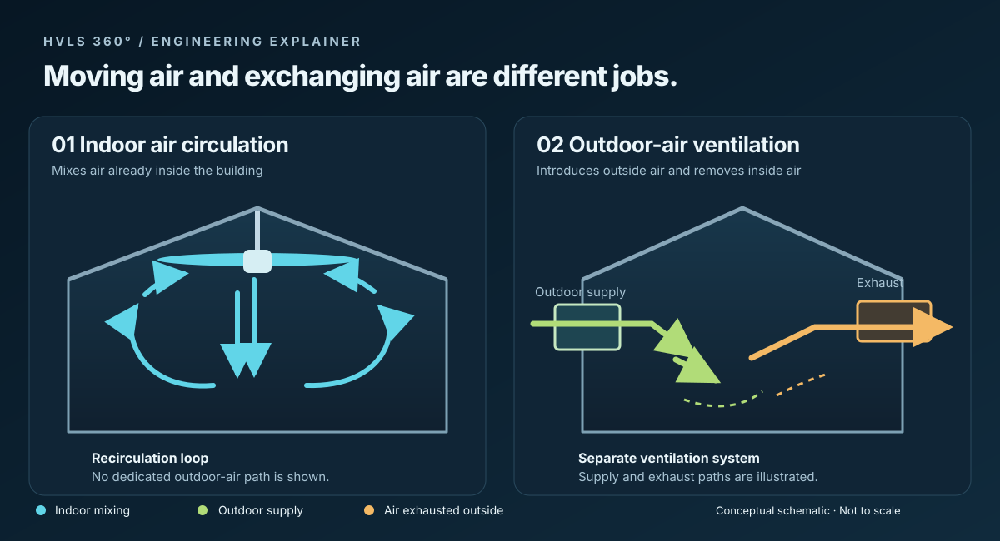

An HVLS fan makes people feel cooler. It doesn't bring in a single cubic foot of outdoor air. If a facility is buying fans for heat complaints, stale air and air quality all at once, it's buying for one problem out of three.

What workers feel
Moving air pulls heat off a person faster, through both convection and sweat evaporating. That's the whole cooling effect. So when a catalog promises a certain number of "degrees cooler," ask what air speed, humidity, temperature, clothing and work rate that number assumed. The thermometer on the wall doesn't drop by that much.
Big Ass Fans walks through those factors in its Ceiling Fan Design Guide [1], and ASHRAE Standard 55-2023 is the broader comfort framework [5]. DOE puts it simply: fans cool people, not rooms [2]. Its example is a house, not a warehouse, but the point holds.
For a spec, name the work areas and the conditions you're trying to fix there. A perceived-cooling figure from a catalog isn't a project target until you know the conditions behind it.
Check the temperature up high
In a tall heated building, warm air piles up under the roof while the crew on the floor stays cold. Fans can push that air back down and shrink the difference between ceiling and floor. Big Ass Fans covers this heating use in the same guide [1].
Take temperatures at several heights before you set the fans. Note where the thermostats are, what the heaters are, and how the fans are running. After you make changes, measure again under similar conditions. Dock doors, insulation, heating controls and shift hours all move the result, so a savings percentage from somebody else's building won't tell you much about this one.
Where outdoor air actually comes from
EPA lists three ways outdoor air gets in: natural ventilation, infiltration, and mechanical intakes or exhaust [3]. Its overview leans residential. A commercial job needs ventilation criteria for the real occupancy and whatever processes or contaminants are in the building.
ASHRAE Standard 62.1-2025 covers ventilation and indoor air quality, including outdoor air, filtration, controls and operation [4]. The edition your jurisdiction adopted may be older, so check with the design team and the local authority.
A fan can help spread that ventilation air around. It can't supply it, and it can't capture fumes at the source. If someone proposes fans in place of required ventilation or source capture, they need an engineer's basis for it in writing.
Decide how you'll measure success
Comfort gets measured where people work. Destratification gets measured top to bottom. Ventilation is its own design, with its own outdoor-air and contaminant numbers.
The submittal still needs the exact model's structural attachment, clearances, electrical supply and controls, plus sprinkler or fire-alarm coordination where it applies. At commissioning, record the shutdown behavior as well as normal operation.
When someone hands you a study as proof, look for the baseline, the measured results, any setpoint changes, the building type and who paid for it. Then agree on your own acceptance measurements before the fans are ordered.
Sources
[1] Big Ass Fans, BAF Ceiling Fan Design Guide, especially sections 2.1 (Thermal Comfort) and 2.4 (Ceiling Fan Use in Heating): https://learn.bigassfans.com/design-guide
[2] U.S. Department of Energy, Top 11 Things You Didn't Know About Saving Energy at Home: Summer Edition: https://www.energy.gov/articles/top-11-things-you-didnt-know-about-saving-energy-home-summer-edition
[3] U.S. Environmental Protection Agency, How does outdoor air enter a building?: https://www.epa.gov/indoor-air-quality-iaq/how-does-outdoor-air-enter-building
[4] ASHRAE, Standard 62.1-2025, Ventilation and Acceptable Indoor Air Quality (official overview): https://www.ashrae.org/technical-resources/bookstore/standards-62-1-62-2
[5] ASHRAE, Standard 55-2023, Thermal Environmental Conditions for Human Occupancy (official overview): https://www.ashrae.org/technical-resources/bookstore/standard-55-thermal-environmental-conditions-for-human-occupancy